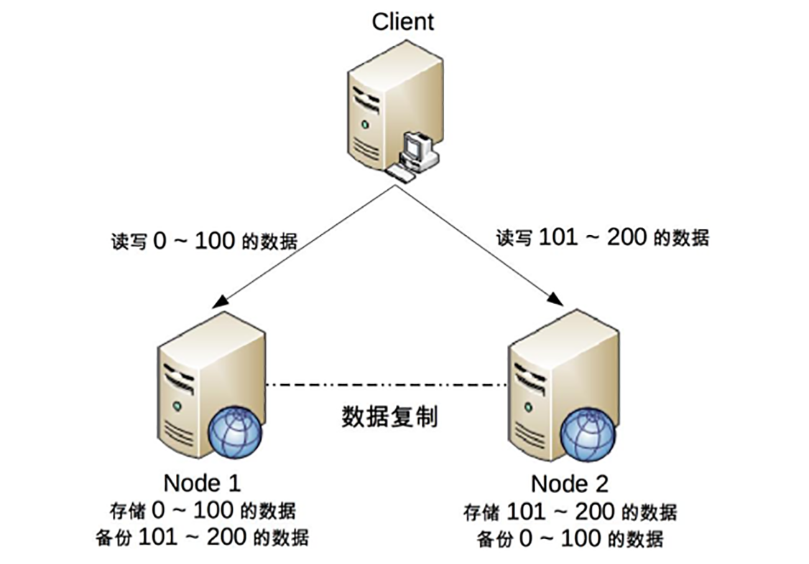

- 00 开篇词 照着做，你也能成为架构师！.md
- 01 架构到底是指什么？.md
- 02 架构设计的历史背景.md
- 03 架构设计的目的.md
- 04 复杂度来源：高性能.md
- 05 复杂度来源：高可用.md
- 06 复杂度来源：可扩展性.md
- 07 复杂度来源：低成本、安全、规模.md
- 08 架构设计三原则.md
- 09 架构设计原则案例.md
- 10 架构设计流程：识别复杂度.md
- 11 架构设计流程：设计备选方案.md
- 12 架构设计流程：评估和选择备选方案.md
- 13 架构设计流程：详细方案设计.md
- 14 高性能数据库集群：读写分离.md
- 15 高性能数据库集群：分库分表.md
- 16 高性能NoSQL.md
- 17 高性能缓存架构.md
- 18 单服务器高性能模式：PPC与TPC.md
- 19 单服务器高性能模式：Reactor与Proactor.md
- 20 高性能负载均衡：分类及架构.md
- 21 高性能负载均衡：算法.md
- 22 想成为架构师，你必须知道CAP理论.md
- 23 想成为架构师，你必须掌握的CAP细节.md
- 24 FMEA方法，排除架构可用性隐患的利器.md
- 25 高可用存储架构：双机架构.md
- 26 高可用存储架构：集群和分区.md
- 27 如何设计计算高可用架构？.md
- 28 业务高可用的保障：异地多活架构.md
- 29 异地多活设计4大技巧.md
- 30 异地多活设计4步走.md
- 31 如何应对接口级的故障？.md
- 32 可扩展架构的基本思想和模式.md
- 33 传统的可扩展架构模式：分层架构和SOA.md
- 34 深入理解微服务架构：银弹 or 焦油坑？.md
- 35 微服务架构最佳实践 - 方法篇.md
- 36 微服务架构最佳实践 - 基础设施篇.md
- 37 微内核架构详解.md
- 38 架构师应该如何判断技术演进的方向？.md
- 39 互联网技术演进的模式.md
- 40 互联网架构模板：存储层技术.md
- 41 互联网架构模板：开发层和服务层技术.md
- 42 互联网架构模板：网络层技术.md
- 43 互联网架构模板：用户层和业务层技术.md
- 44 互联网架构模板：平台技术.md
- 45 架构重构内功心法第一式：有的放矢.md
- 46 架构重构内功心法第二式：合纵连横.md
- 47 架构重构内功心法第三式：运筹帷幄.md
- 48 再谈开源项目：如何选择、使用以及二次开发？.md
- 49 谈谈App架构的演进.md
- 50 架构实战：架构设计文档模板.md
- 51 如何画出优秀的软件系统架构图？.md
- 加餐｜业务架构实战营开营了.md
- 加餐｜单服务器高性能模式性能对比.md
- 加餐｜扒一扒中台皇帝的外衣.md
- 如何高效地学习开源项目 华仔，放学别走！ 第3期.md
- 新书首发 《从零开始学架构》.md
- 架构专栏特别放送 华仔，放学别走！ 第2期.md
- 架构专栏特别放送 华仔，放学别走！第1期.md
- 架构师必读书单 华仔，放学别走！ 第5期.md
- 架构师成长之路 华仔，放学别走！ 第4期.md
- 结束语 坚持，成就你的技术梦想.md
23 想成为架构师，你必须掌握的CAP细节
理论的优点在于清晰简洁、易于理解，但缺点就是高度抽象化，省略了很多细节，导致在将理论应用到实践时，由于各种复杂情况，可能出现误解和偏差，CAP理论也不例外。如果我们没有意识到这些关键的细节点，那么在实践中应用CAP理论时，就可能发现方案很难落地。
而且当谈到数据一致性时，CAP、ACID、BASE难免会被我们拿出来讨论，原因在于这三者都是和数据一致性相关的理论，如果不仔细理解三者之间的差别，则可能会陷入一头雾水的状态，不知道应该用哪个才好。
今天，我来讲讲CAP的具体细节，简单对比一下ACID、BASE几个概念的关键区别点。
CAP关键细节点
埃里克·布鲁尔（Eric Brewer）在《CAP理论十二年回顾：“规则”变了》（http://www.infoq.com/cn/articles/cap-twelve-years-later-how-the-rules-have-changed）一文中详细地阐述了理解和应用CAP的一些细节点，可能是由于作者写作风格的原因，对于一些非常关键的细节点一句话就带过了，这里我特别提炼出来重点阐述。
- CAP关注的粒度是数据，而不是整个系统。
原文就只有一句话：
C与A之间的取舍可以在同一系统内以非常细小的粒度反复发生，而每一次的决策可能因为具体的操作，乃至因为牵涉到特定的数据或用户而有所不同。
但这句话是理解和应用CAP理论非常关键的一点。CAP理论的定义和解释中，用的都是system、node这类系统级的概念，这就给很多人造成了很大的误导，认为我们在进行架构设计时，整个系统要么选择CP，要么选择AP。但在实际设计过程中，每个系统不可能只处理一种数据，而是包含多种类型的数据，有的数据必须选择CP，有的数据必须选择AP。而如果我们做设计时，从整个系统的角度去选择CP还是AP，就会发现顾此失彼，无论怎么做都是有问题的。
以一个最简单的用户管理系统为例，用户管理系统包含用户账号数据（用户ID、密码）、用户信息数据（昵称、兴趣、爱好、性别、自我介绍等）。通常情况下，用户账号数据会选择CP，而用户信息数据会选择AP，如果限定整个系统为CP，则不符合用户信息数据的应用场景；如果限定整个系统为AP，则又不符合用户账号数据的应用场景。
所以在CAP理论落地实践时，我们需要将系统内的数据按照不同的应用场景和要求进行分类，每类数据选择不同的策略（CP还是AP），而不是直接限定整个系统所有数据都是同一策略。
- CAP是忽略网络延迟的。
这是一个非常隐含的假设，布鲁尔在定义一致性时，并没有将延迟考虑进去。也就是说，当事务提交时，数据能够瞬间复制到所有节点。但实际情况下，从节点A复制数据到节点B，总是需要花费一定时间的。如果是相同机房，耗费时间可能是几毫秒；如果是跨地域的机房，例如北京机房同步到广州机房，耗费的时间就可能是几十毫秒。这就意味着，CAP理论中的C在实践中是不可能完美实现的，在数据复制的过程中，节点A和节点B的数据并不一致。
不要小看了这几毫秒或者几十毫秒的不一致，对于某些严苛的业务场景，例如和金钱相关的用户余额，或者和抢购相关的商品库存，技术上是无法做到分布式场景下完美的一致性的。而业务上必须要求一致性，因此单个用户的余额、单个商品的库存，理论上要求选择CP而实际上CP都做不到，只能选择CA。也就是说，只能单点写入，其他节点做备份，无法做到分布式情况下多点写入。
需要注意的是，这并不意味着这类系统无法应用分布式架构，只是说“单个用户余额、单个商品库存”无法做分布式，但系统整体还是可以应用分布式架构的。例如，下面的架构图是常见的将用户分区的分布式架构。

我们可以将用户id为0 ~ 100的数据存储在Node 1，将用户id为101 ~ 200的数据存储在Node 2，Client根据用户id来决定访问哪个Node。对于单个用户来说，读写操作都只能在某个节点上进行；对所有用户来说，有一部分用户的读写操作在Node 1上，有一部分用户的读写操作在Node 2上。
这样的设计有一个很明显的问题就是某个节点故障时，这个节点上的用户就无法进行读写操作了，但站在整体上来看，这种设计可以降低节点故障时受影响的用户的数量和范围，毕竟只影响20%的用户肯定要比影响所有用户要好。这也是为什么挖掘机挖断光缆后，支付宝只有一部分用户会出现业务异常，而不是所有用户业务异常的原因。
- 正常运行情况下，不存在CP和AP的选择，可以同时满足CA。
CAP理论告诉我们分布式系统只能选择CP或者AP，但其实这里的前提是系统发生了“分区”现象。如果系统没有发生分区现象，也就是说P不存在的时候（节点间的网络连接一切正常），我们没有必要放弃C或者A，应该C和A都可以保证，这就要求架构设计的时候既要考虑分区发生时选择CP还是AP，也要考虑分区没有发生时如何保证CA。
同样以用户管理系统为例，即使是实现CA，不同的数据实现方式也可能不一样：用户账号数据可以采用“消息队列”的方式来实现CA，因为消息队列可以比较好地控制实时性，但实现起来就复杂一些；而用户信息数据可以采用“数据库同步”的方式来实现CA，因为数据库的方式虽然在某些场景下可能延迟较高，但使用起来简单。
- 放弃并不等于什么都不做，需要为分区恢复后做准备。
CAP理论告诉我们三者只能取两个，需要“牺牲”（sacrificed）另外一个，这里的“牺牲”是有一定误导作用的，因为“牺牲”让很多人理解成什么都不做。实际上，CAP理论的“牺牲”只是说在分区过程中我们无法保证C或者A，但并不意味着什么都不做。因为在系统整个运行周期中，大部分时间都是正常的，发生分区现象的时间并不长。例如，99.99%可用性（俗称4个9）的系统，一年运行下来，不可用的时间只有50分钟；99.999%（俗称5个9）可用性的系统，一年运行下来，不可用的时间只有5分钟。分区期间放弃C或者A，并不意味着永远放弃C和A，我们可以在分区期间进行一些操作，从而让分区故障解决后，系统能够重新达到CA的状态。
最典型的就是在分区期间记录一些日志，当分区故障解决后，系统根据日志进行数据恢复，使得重新达到CA状态。同样以用户管理系统为例，对于用户账号数据，假设我们选择了CP，则分区发生后，节点1可以继续注册新用户，节点2无法注册新用户（这里就是不符合A的原因，因为节点2收到注册请求后会返回error），此时节点1可以将新注册但未同步到节点2的用户记录到日志中。当分区恢复后，节点1读取日志中的记录，同步给节点2，当同步完成后，节点1和节点2就达到了同时满足CA的状态。
而对于用户信息数据，假设我们选择了AP，则分区发生后，节点1和节点2都可以修改用户信息，但两边可能修改不一样。例如，用户在节点1中将爱好改为“旅游、美食、跑步”，然后用户在节点2中将爱好改为“美食、游戏”，节点1和节点2都记录了未同步的爱好数据，当分区恢复后，系统按照某个规则来合并数据。例如，按照“最后修改优先规则”将用户爱好修改为“美食、游戏”，按照“字数最多优先规则”则将用户爱好修改为“旅游，美食、跑步”，也可以完全将数据冲突报告出来，由人工来选择具体应该采用哪一条。
ACID
ACID是数据库管理系统为了保证事务的正确性而提出来的一个理论，ACID包含四个约束，下面我来解释一下。
- Atomicity（原子性）
一个事务中的所有操作，要么全部完成，要么全部不完成，不会在中间某个环节结束。事务在执行过程中发生错误，会被回滚到事务开始前的状态，就像这个事务从来没有执行过一样。
- Consistency（一致性）
在事务开始之前和事务结束以后，数据库的完整性没有被破坏。
- Isolation（隔离性）
数据库允许多个并发事务同时对数据进行读写和修改的能力。隔离性可以防止多个事务并发执行时由于交叉执行而导致数据的不一致。事务隔离分为不同级别，包括读未提交（Read uncommitted）、读提交（read committed）、可重复读（repeatable read）和串行化（Serializable）。
- Durability（持久性）
事务处理结束后，对数据的修改就是永久的，即便系统故障也不会丢失。
可以看到，ACID中的A（Atomicity）和CAP中的A（Availability）意义完全不同，而ACID中的C和CAP中的C名称虽然都是一致性，但含义也完全不一样。ACID中的C是指数据库的数据完整性，而CAP中的C是指分布式节点中的数据一致性。再结合ACID的应用场景是数据库事务，CAP关注的是分布式系统数据读写这个差异点来看，其实CAP和ACID的对比就类似关公战秦琼，虽然关公和秦琼都是武将，但其实没有太多可比性。
BASE
BASE是指基本可用（Basically Available）、软状态（ Soft State）、最终一致性（ Eventual Consistency），核心思想是即使无法做到强一致性（CAP的一致性就是强一致性），但应用可以采用适合的方式达到最终一致性。
- 基本可用（Basically Available）
分布式系统在出现故障时，允许损失部分可用性，即保证核心可用。
这里的关键词是“部分”和“核心”，具体选择哪些作为可以损失的业务，哪些是必须保证的业务，是一项有挑战的工作。例如，对于一个用户管理系统来说，“登录”是核心功能，而“注册”可以算作非核心功能。因为未注册的用户本来就还没有使用系统的业务，注册不了最多就是流失一部分用户，而且这部分用户数量较少。如果用户已经注册但无法登录，那就意味用户无法使用系统。例如，充了钱的游戏不能玩了、云存储不能用了……这些会对用户造成较大损失，而且登录用户数量远远大于新注册用户，影响范围更大。
- 软状态（Soft State）
允许系统存在中间状态，而该中间状态不会影响系统整体可用性。这里的中间状态就是CAP理论中的数据不一致。
- 最终一致性（Eventual Consistency）
系统中的所有数据副本经过一定时间后，最终能够达到一致的状态。
这里的关键词是“一定时间” 和 “最终”，“一定时间”和数据的特性是强关联的，不同的数据能够容忍的不一致时间是不同的。举一个微博系统的例子，用户账号数据最好能在1分钟内就达到一致状态，因为用户在A节点注册或者登录后，1分钟内不太可能立刻切换到另外一个节点，但10分钟后可能就重新登录到另外一个节点了；而用户发布的最新微博，可以容忍30分钟内达到一致状态，因为对于用户来说，看不到某个明星发布的最新微博，用户是无感知的，会认为明星没有发布微博。“最终”的含义就是不管多长时间，最终还是要达到一致性的状态。
BASE理论本质上是对CAP的延伸和补充，更具体地说，是对CAP中AP方案的一个补充。前面在剖析CAP理论时，提到了其实和BASE相关的两点：
- CAP理论是忽略延时的，而实际应用中延时是无法避免的。
这一点就意味着完美的CP场景是不存在的，即使是几毫秒的数据复制延迟，在这几毫秒时间间隔内，系统是不符合CP要求的。因此CAP中的CP方案，实际上也是实现了最终一致性，只是“一定时间”是指几毫秒而已。
- AP方案中牺牲一致性只是指分区期间，而不是永远放弃一致性。
这一点其实就是BASE理论延伸的地方，分区期间牺牲一致性，但分区故障恢复后，系统应该达到最终一致性。
综合上面的分析，ACID是数据库事务完整性的理论，CAP是分布式系统设计理论，BASE是CAP理论中AP方案的延伸。
小结
今天我为你讲了深入理解CAP理论所需要特别关注的细节点，以及ACID和BASE两个相似的术语，这些技术细节在架构设计中非常关键，希望对你有所帮助。
这就是今天的全部内容，留一道思考题给你吧，假如你来设计电商网站的高可用系统，按照CAP理论的要求，你会如何设计？
© 2019 - 2023 Liangliang Lee. Powered by gin and hexo-theme-book.